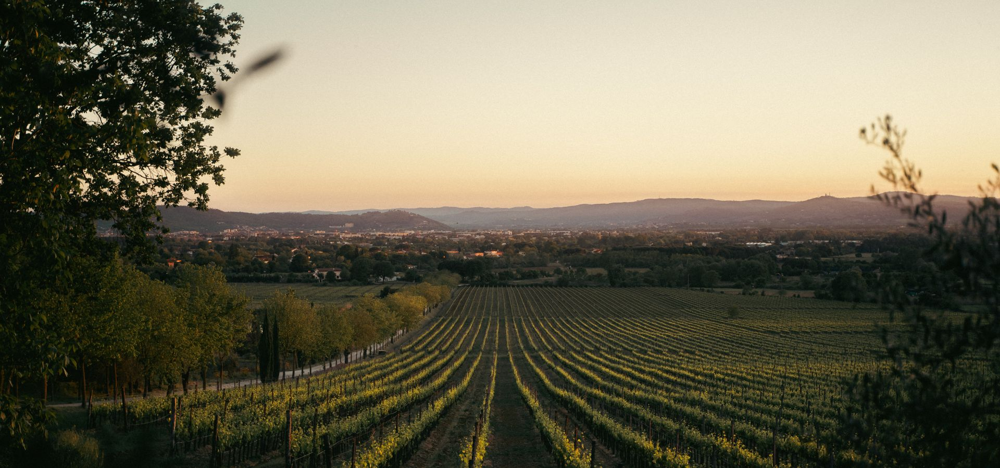

„Magyarország legnagyobb borünnepe a Budai Várban, páratlan panorámával a Dunára és a Pesti oldalra."
Négy napon át több mint 200 hazai és nemzetközi borászat kínálja tételeit a Budai Vár falai között. A fesztivál idén is a magyar borvidékek sokszínűségét állítja a középpontba: a soproni kékfrankostól a tokaji aszúig minden stílus képviselteti magát.
Mire számíthatsz?
Vezetett kóstolók, borvacsorák, mesterkurzusok és élőzenei programok várnak minden este. A gasztronómiai kínálatról a hazai éttermek legjava gondoskodik, a gyerekeket külön családi zóna várja.
A belépőjegy mellé kóstolópohár jár, a kóstolójegyek a helyszínen válthatók. A rendezvény kártyás fizetést fogad el minden ponton.